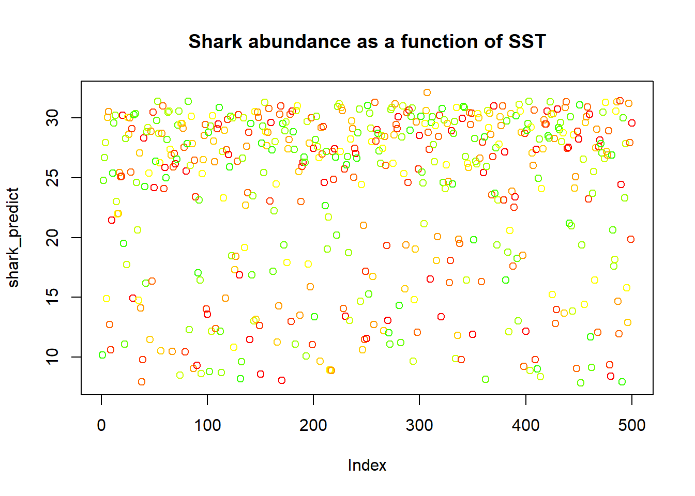
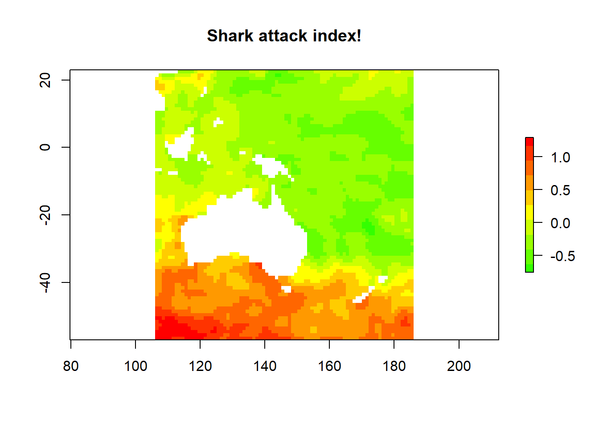

file.exists("Cairns_Mangroves_30m.tif")
file.exists("SST_feb_2013.img")
file.exists("SST_feb_mean.img")Fundamentos de imagenes raster
Este tutorial se centra en introducir los conceptos básicos de lo que es un raster, y luego cómo importar datos raster a R y realizar algunas manipulaciones básicas. Si solo necesitas crear un mapa de ubicación de sitios o algo similar, es posible que sea mejor comenzar con este tutorial.
Empecemos configuración
Verifica si puedes ver los datos que vamos a utilizar (tu directorio de trabajo debe ser la ubicación de este archivo)
Instala los paquetes que vamos a necesitar: el paquete raster es la biblioteca principal para objetos raster en R, dismo tiene algunos envoltorios útiles para diversas funciones de muestreo (además de otras cosas interesantes relacionadas con la SDM), y rgdal tiene muchos controladores para leer y escribir varios formatos de datos espaciales.
install.packages(c("raster", "dismo", "rgdal"))Verifica que puedas cargarlos
library(raster)
library(dismo)
library(rgdal)¿Qué es un raster?
Ahora estamos listos para comenzar, pero primero, ¿qué es un raster? Bueno, simplemente, es una cuadrícula de coordenadas en las que podemos definir ciertos valores, y mostramos los elementos de la cuadrícula correspondiente según esos valores. Los datos raster son esencialmente una matriz, pero un raster es especial en el sentido de que definimos la forma y el tamaño de cada elemento de la cuadrícula, y generalmente dónde debe ubicarse la cuadrícula en algún espacio conocido (es decir, un sistema de coordenadas geográficas proyectadas).

Comprensión de los datos raster
Crea un objeto raster y consultalo
dummy_raster <- raster(ncol = 10, nrow = 10) # vamos a crear un raster pequeño
nrow(dummy_raster) # número de píxeles
ncol(dummy_raster) # número de píxeles
ncell(dummy_raster) # número total de píxeles
# plot(dummy_raster) # no se muestra el gráfico porque el raster está vacío
hasValues(dummy_raster) # puedes verificar si tu raster tiene datos
values(dummy_raster) <- 1 # asignar un valor de píxel al raster, en este caso 1
plot(dummy_raster) # todo el raster tiene un valor de píxel de 1Crea un raster de números aleatorios para poder ver qué está sucediendo de manera más sencilla.
values(dummy_raster) <- runif(ncell(dummy_raster)) # se asigna un número aleatorio a cada píxel
plot(dummy_raster) # ahora el raster tiene píxeles con números aleatorios
values(dummy_raster) <- runif(ncell(dummy_raster))
plot(dummy_raster)
dummy_raster[1, 1] # podemos consultar rasters (y seleccionar los valores de la matriz) utilizando la indexación estándar de R
dummy_raster[1, ]
dummy_raster[, 1]Utiliza esto para consultar interactivamente el raster - presiona “esc” para salir
click(dummy_raster)¿Qué tiene de especial un objeto raster?
str(dummy_raster) # observa el CRS y la extensión, además de otros atributos
crs(dummy_raster) # verifica el sistema de coordenadas en el formato PROJ.4 por defecto
xmax(dummy_raster) # verifica la extensión máxima
xmin(dummy_raster)
ymax(dummy_raster)
ymin(dummy_raster)
extent(dummy_raster)
res(dummy_raster) # resolución
xres(dummy_raster) # ancho de píxel
yres(dummy_raster) # altura de píxelEjercicios
- Crea un raster con una cara sonriente (pista: crea un raster en blanco y luego utiliza la indexación para cambiar los valores secuencialmente).
- Extrae algunos datos de vectores y matrices del raster (pista: utiliza la indexación o funciones como
?as.matrix). - Genera un ubconjunto el raster en un trozo más pequeño (más complicado - consulta
?crop).
Trabajando con datos reales de raster
Importa los datos de manglares de Cairns y échales un vistazo
mangrove <- raster("Cairns_Mangroves_30m.tif")
crs(mangrove) # obtener la proyección
plot(mangrove, col = topo.colors("2")) # observa dos valores de píxel, 0 (no manglar) y 1 (manglar)
NAvalue(mangrove) <- 0 # crear un único conjunto de datos binario donde los manglares tienen un valor de ráster 1
plot(mangrove, col = "mediumseagreen")La leyenda es un poco extraña - podemos cambiarla a una leyenda categórica haciendo esto, pero generalmente nos quedaremos con la barra continua predeterminada para reducir el desorden en el código
cols <- c("white", "red")
plot(mangrove, col = cols, legend = F)
legend(x = "bottomleft", legend = c("no mangrove", "mangrove"), fill = cols)Procesamiento sencillo
agg_mangrove <- aggregate(mangrove, fact = 10)
par(mfrow = c(2, 2))
plot(mangrove, col = "mediumseagreen")
plot(agg_mangrove, col = "firebrick")
plot(agg_mangrove, col = "firebrick")
plot(mangrove, col = "mediumseagreen", add = TRUE) Crea un búfer sencillo
buf_mangrove <- buffer(agg_mangrove, width = 1000) # buffer
plot(buf_mangrove, col = "peachpuff")
plot(mangrove, col = "mediumseagreen", add = T) Ten en cuenta que en este punto, podríamos jugar con los márgenes si nos importara, por ejemplo. par(mar = c(2,1,2,1), oma = c(2,1,2,1)).
Convierte el raster en datos de puntos, y luego importa los datos de puntos como raster
pts_mangrove <- rasterToPoints(mangrove)
str(pts_mangrove)
par(mfrow = c(2, 2))
plot(mangrove)
plot(rasterFromXYZ(pts_mangrove))
NAvalue(mangrove) <- -999
pts_mangrove <- rasterToPoints(mangrove)
plot(rasterFromXYZ(pts_mangrove))
NAvalue(mangrove) <- 0
dev.off()Exporta tus datos - vamos a probar con el raster agregado
KML(agg_mangrove, "agg_mangrove.kml", overwrite = TRUE)
writeRaster(agg_mangrove, "agg_mangrove.tif", format = "GTiff")¿Y los rasters de múltiples bandas? El paquete raster los maneja de la misma manera, solo que el atributo nbands() es >1 - piensa en un array en lugar de una matriz.
multiband <- raster("multiband.tif")
nbands(multiband)
nrow(multiband)
ncol(multiband)
ncell(multiband)Crear nuestro propio raster multibanda?
for (i in 1:4) {
assign(x = paste0("band", i), value = raster(ncol = 10, nrow = 10))
}
values(band1) <- runif(100)
values(band2) <- runif(100)
values(band3) <- runif(100)
values(band4) <- runif(100)
multiband_stack <- stack(list(band1, band2, band3, band4))
nlayers(multiband_stack)
plot(multiband_stack)Generando una imagen RGB?
plotRGB(multiband_stack, r = 1, g = 2, b = 3)
range(multiband_stack)
plotRGB(multiband_stack, r = 1, g = 2, b = 3, scale = 1)
plotRGB(multiband_stack, r = 3, g = 2, b = 1, scale = 1)
plotRGB(multiband_stack, r = 2, g = 3, b = 4, scale = 1)Otras funciones de procesamiento útiles
?crop
?merge
?trim
?interpolate
?reclassify
?rasterToPolygonsAlgunas funciones de análisis útiles
?zonal
?focal
?calc
?distance
?sampleRandom
?sampleRegular
?sampleStratifiedHoy no entraremos en detalles sobre los sistemas de coordenadas y proyección, pero de manera muy breve, CRS() y crs() son las funciones/objetos clave.
crs(mangrove)
proj4string(mangrove)
latlong <- "+init=epsg:4326"
CRS(latlong)
eastnorth <- "+init=epsg:3857"
CRS(eastnorth)
latlongs_mangrove <- rasterToPoints(mangrove, spatial = T)
latlongs_mangrove
projected_pts_mangrove <- spTransform(latlongs_mangrove, CRS(eastnorth))
projected_pts_mangroveEjercicios
- Importa el raster
"Landsat_TIR.tif", que es una imagen TIR (infrarrojo térmico) del satélite Landsat 8 capturada sobre un área de cultivo. - Supongamos que modelamos los valores TIR mediante regresión lineal para calcular la temperatura real en el suelo, y beta0 fue 0.5 y beta1 fue 0.1 (es decir, y = 0.1x + 0.5). Haz un mapa de temperatura (pista:
?calc, y deberás escribir una función). - Agrega un título y etiquetas de ejes al gráfico, y utiliza colores que tengan sentido para la temperatura.
- Crea un raster coincidente (en extensión y número de píxeles, para la solución más fácil) con códigos de zona (para cada píxel), y luego calcula la temperatura media/desviación estándar en esas zonas (pista:
?valuesy?zonal).
Ampliando el análisis de rasters
Ahora hagamos un recorrido rápido por los tipos de análisis que podemos realizar, y con suerte, descubramos una comprensión más profunda del análisis de rasters en R.
Carga algunos datos de SST (temperatura de la superficie del mar) - Feb 2013 para el globo (como un dato aparte, verifica este enlace para obtener más conjuntos de datos globales marinos geniales:
sst_feb <- raster("SST_feb_2013.img")
plot(sst_feb)Recórtalos al Pacífico para poder comparar los datos de manglar
pacific_extent <- extent(mangrove) + 80
pacific_extent
sst_feb_crop <- crop(sst_feb, pacific_extent)
plot(sst_feb_crop)Carga los datos de SST promedio a largo plazo para febrero
sst_feb_mn <- raster("SST_feb_mean.img")
plot(sst_feb_mn)
sst_mn_crop <- crop(sst_feb_mn, pacific_extent)
plot(sst_mn_crop)Ahora vamos a crear un mapa de anomalía de SST
sst_anomaly <- sst_feb_crop - sst_mn_crop
plot(sst_anomaly)
plot(sst_anomaly, col = rev(heat.colors("100")))
contour(sst_anomaly, add = T) Consultar valores individuales,
minValue(sst_anomaly)
maxValue(sst_anomaly)
plot(sst_anomaly == maxValue(sst_anomaly))o gráficos/estadísticas para toda la imagen,
plot(sst_anomaly > 1)
par(mar = c(3, 3, 3, 3))
hist(sst_anomaly, main = "February SST Anomaly", xlab = "sst anomaly")¡o vamos a ser un poco más ingeniosos!
max_anom <- which.max(sst_anomaly)
max_xy <- xyFromCell(sst_anomaly, max_anom)
plot(sst_anomaly,
col = rev(heat.colors("100")),
main = "2013 Feb SST anomaly + hottest point"
)
points(max_xy, pch = 8, cex = 2)¿Muestrear puntos condicionalmente? Claro. Sin embargo, más adelante veremos una mejor forma de hacerlo.
xy <- xyFromCell(sst_anomaly, sample(1:ncell(sst_anomaly), 20))
points(xy)
extract(sst_feb, xy)Prueba también ?getValues. Bueno, recapitulemos cómo escribir de nuevo en el disco
writeRaster(sst_anomaly, "sst_anomaly.tif", format = "GTiff")
KML(sst_anomaly, "sst_anomaly.kml")
save(sst_anomaly, file = "sst_anomaly_feb.RData")
save(sst_feb_mn, file = "sst_feb_mn.RData") ¿Qué sucede con esos dos comandos save()? Algo más que debes entender sobre la forma en que el paquete raster maneja los archivos ráster es que, para los rásteres más grandes, no se almacena todo el archivo en la memoria, sino que es solo un puntero al archivo. Puedes probar si lo es o no.
inMemory(sst_feb_mn)
inMemory(sst_anomaly) Vimos stack() anteriormente, y podemos usarlo para imágenes de múltiples bandas, pero también para apilar diferentes fuentes de información. brick() funciona de la misma manera, excepto que los objetos RasterBrick están diseñados para datos más pequeños, y un RasterBrick solo puede apuntar a un archivo, a diferencia de los objetos RasterStack, que pueden apuntar a varios archivos.
sst_stack <- stack(sst_mn_crop, sst_feb_crop, sst_anomaly)
plot(sst_stack)
nlayers(sst_stack)
plot(sst_stack, 2)
names(sst_stack)[2] <- "SST_feb_2013"
names(sst_stack)[3] <- "SST_anomaly"Así que podemos ver por qué eso podría ser útil para diversas aplicaciones de teledetección y modelado.
Modelado e interpolación
Ahora veamos un ejemplo rápido de lo que podemos hacer con rásteres en el contexto del modelado de distribución de especies y el modelado espacial. Primero, extraigamos algunos puntos aleatorios; asegúrate de haber ejecutado library(dismo).
rpoints_sst <- randomPoints(sst_stack, 500)
plot(sst_stack, 2)
points(rpoints_sst, pch = 16, cex = 0.7)
sst_samp <- extract(sst_stack, rpoints_sst)
str(sst_samp)
sst_samp <- data.frame(sst_samp,
lat = rpoints_sst[, 2], lon = rpoints_sst[, 1]
)
plot(sst_samp$SST_anomaly ~ sst_samp$SST_feb_2013)
# abline(lm(sst_samp$SST_anomaly ~ sst_samp$SST_feb_2013))
# plot(mgcv::gam(sst_samp$SST_anomaly ~ s(sst_samp$SST_feb_2013)), resid = T)¿Y si tuviéramos algunos datos biológicos reales en esos puntos? Bueno, inventemos algunos y luego ajustemos un modelo a ellos.
sst_samp$shark_abund <- rpois(n = nrow(sst_samp), lambda = round(sst_samp$SST_feb_2013))
plot(sst_samp$shark_abund ~ sst_samp$SST_feb_2013)
shark_glm <- glm(sst_samp$shark_abund ~ sst_samp$SST_feb_2013 + sst_samp$SST_anomaly,
data = sst_samp, family = "poisson"
)
summary(shark_glm)Por lo general, usaríamos predict() en un objeto de ajuste de modelo, y también podemos usarlo de manera similar para predecir datos ráster.
head(predict(shark_glm, type = "response"))
shark_predict <- predict(shark_glm, new_data = sst_samp, type = "response")
plot(shark_predict,
col = rev(rainbow(n = 10, start = 0, end = 0.3)),
main = "Shark abundance as a function of SST"
)
Vamos a intentar algo diferente, digamos el riesgo de ataque. ¿No se trata solo de la abundancia, sino también de algo más, como su nivel de agresividad o promedio?
sst_samp$shark_aggression <- sst_samp$lat * -1
sst_samp$shark_attack <- scale(sst_samp$shark_abund * sst_samp$shark_aggression)
attack_lm <- lm(shark_attack ~ SST_feb_2013 + SST_anomaly,
data = sst_samp
)
shark_attack <- predict(sst_stack, attack_lm, type = "response")
plot(shark_attack,
col = rev(rainbow(n = 10, start = 0, end = 0.3)),
main = "Shark attack index!"
)
Este es un ejemplo rápido y tonto. Si fuéramos menos perezosos, podríamos crear una nueva pila de imágenes con las predicciones de abundancia y los valores de latitud, extraer las muestras aleatorias nuevamente y volver a ajustar el modelo y las predicciones.
Ejercicios
- Intenta generar algunas estadísticas (valores o gráficos) para la anomalía de la SST en diferentes regiones, ya sea en todo el mundo o en Australia.
- Prueba algunas operaciones matemáticas de bandas o algunas declaraciones condicionales utilizando múltiples raster o un RasterStack.
- Crea otro escenario de SDM, ya sea utilizando datos descargados o datos totalmente simulados.
- Si solo tuviéramos los datos físicos en algunos puntos y quisiéramos convertirlos en un mapa de SST ponderado geográficamente o interpolado, podrías muestrear algunos de los puntos y luego usar
library(gstat)para probar una interpolación IDW (ponderada por distancia inversa). Realiza algunas interpolaciones, variando la cantidad de puntos utilizados, y observa cómo afecta a tu producto interpolado.
Algo más para investigar
Algunos de los paquetes comúnmente utilizados para el análisis de datos espaciales.
library(sp)
library(maps)
library(rasterVis)
library(maptools)
library(mapproj)
library(rgeos) También podrías intentar obtener datos climáticos bioclimáticos utilizando la función getData() del paquete raster, o obtener varios tipos de mapas utilizando la función gmap() del paquete dismo o la función map del paquete maps. Si visitas la página de GitHub de este tutorial, encontrarás algunas respuestas a los ejercicios, además de algunos extras relacionados con las sugerencias anteriores.
Autor: Mitchell Lyons - 2017